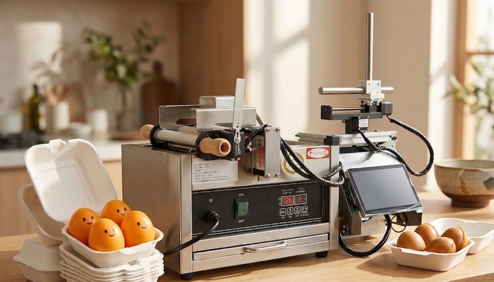

傳統創業 vs. AI 輕創業：自動雞蛋糕機如何幫你省下 70% 人力成本？
厭倦了請人難、品質不穩嗎？肯尼雞蛋糕專業分析：自動化設備如何改寫餐飲創業規則...
閱讀全文專注 AI 自動化實踐者。 Kenny Huang 先生曾任職於頂尖科技公司 AI 部門，將數據科學和機器學習邏輯導入傳統餐飲業。
我們的理念是：透過自動智慧系統，將複雜的製作流程標準化，讓人力更專注於服務與營銷，實現真正的**輕量級高效率創業**。
(點擊播放觀看自動化流程)
告別手動麵糊不均！機器精準控制注料量，確保每顆雞蛋糕品質穩定、大小一致。
機器完成最耗時的烘烤流程，員工只需快速取放，大幅縮短顧客等待時間。
輕鬆切換熊、貓、蛋等多種模具，產品自帶話題與高人氣，吸引全齡顧客。
透明化操作流程，符合食品衛生標準。介面直覺，降低員工培訓難度與時間。

我們更新了最新的機器運作細節！透過 2026 年升級的 ESP32 控制系統，注漿精準度再次提升，歡迎透過上方影片了解運作細節。
無論您是想加盟創業、採購設備，或對 AI 自動化解決方案有興趣，都歡迎聯繫我們！
電話：0986-994952
電子郵件：figofpv@gmail.com
地址：桃園市中壢區中建里延平路500號10樓之4